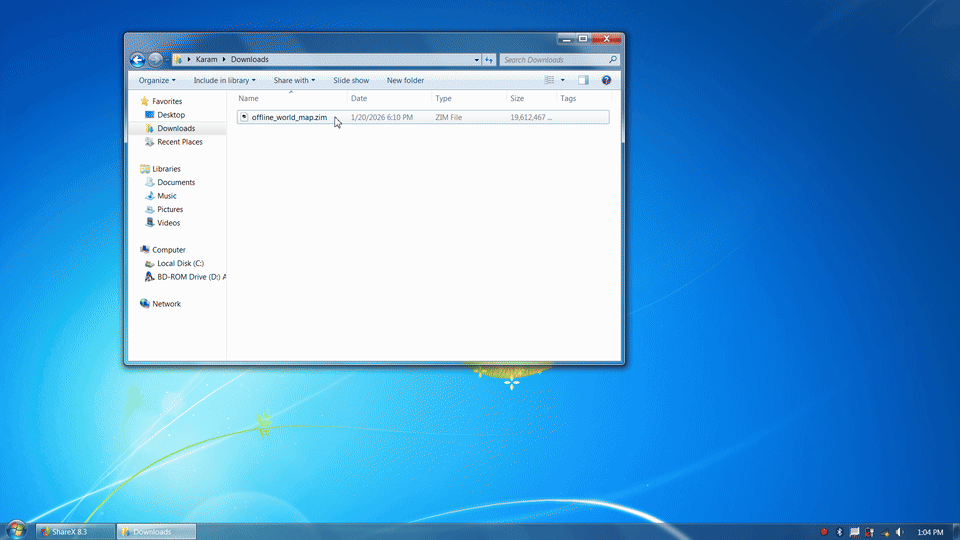
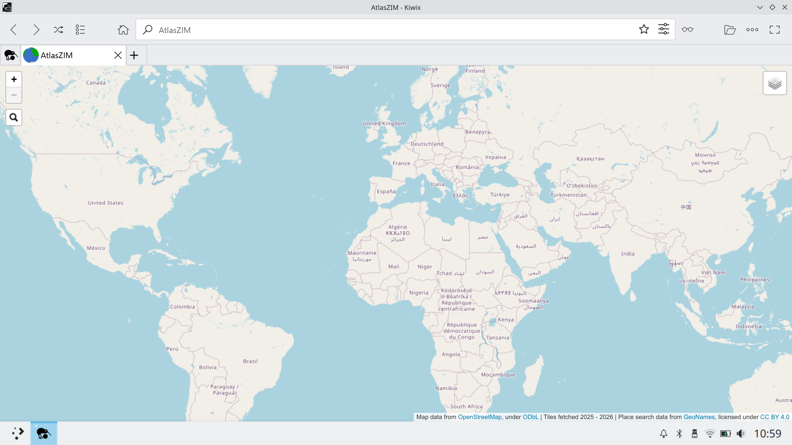
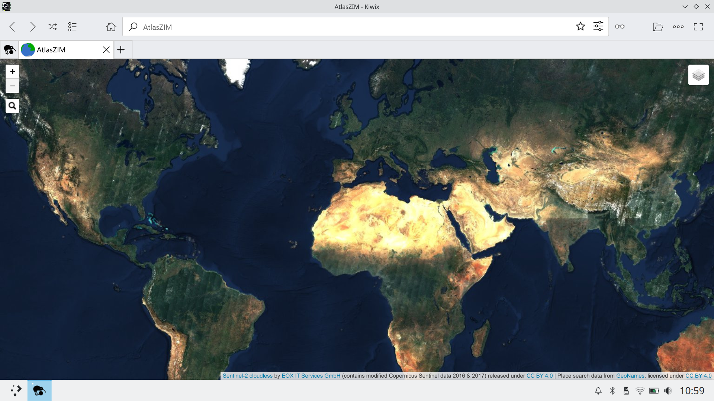

Demo

Screenshots




When to use this
Use AtlasZIM when you want:
- A fully offline world map / digital atlas experience (no network required at runtime)
- A single-file (
.zim) map and satellite imagery archive solution - An offline geographic reference that runs on platforms supported by Kiwix (desktop + mobile)
- Offline place-name lookup/search (GeoNames-backed)
Not intended for:
- Turn-by-turn navigation, routing, or directions
- Live traffic, real-time updates, or online map APIs
- Scenarios where you need frequently-refreshed map data (this is an offline snapshot)
What this includes
AtlasZIM is a self-contained map application bundled inside a single .zim file. When opened in
Kiwix, it behaves like an offline website.
- OpenStreetMap-based raster map tiles
- Sentinel-2 cloudless satellite imagery
- A Leaflet-based JavaScript map viewer
- An offline place search UI built with Leaflet.Control.Search and GeoNames data
Why ZIM instead of traditional offline map formats?
Most offline maps are distributed as MBTiles, vector databases, or app-specific formats. This project explores a different approach: using ZIM as an offline web container.
Advantages:
- Single-file distribution
- Works on all platforms supported by Kiwix (desktop and mobile)
- No dedicated map application required
Features
- Global coverage
- Multiple zoom levels
- Map and satellite imagery layers
- Fully offline pan-and-zoom navigation
- Offline place search
- Runs entirely inside the Kiwix reader
- Coverage extends between ±85.051129° latitude due to use of the Web Mercator projection.
Design decisions
This project intentionally uses pre-rendered raster tiles rather than vector tiles.
While vector tiles can significantly reduce storage requirements, they shift cost to client-side computation (geometry decoding, rendering, memory usage), which is difficult to predict across the wide range of devices that run Kiwix.
By serving simple raster tiles from a ZIM file, the map remains lightweight to render and behaves consistently even on older or low-power devices. The large file size also acts as a natural capability filter: devices that can store tens of gigabytes of tiles almost certainly have sufficient CPU and RAM to handle raster rendering smoothly.
Additionally, because a substantial portion of the dataset is satellite imagery — which is inherently raster — vector tiles would not reduce total size as dramatically in this context. The goal is maximum compatibility and predictable performance rather than minimal disk usage.
Downloads
Price: $50 — one-time purchase, includes access to the current release and all prior versions.
Requirements & Installation
File size
Depending on the version, AtlasZIM can be large. Verify sufficient free space before downloading.
Download format
For some versions of AtlasZIM, the file size exceeds Gumroad’s 16 GiB limit, so the download is provided as multiple .7z archive parts.
For these versions, after downloading all parts, use 7-Zip (free, open-source) or a compatible archive tool to extract and combine them into a single .zim file.
How to use
Open the resulting .zim file with Kiwix (available for Windows, macOS, Linux, Android, iOS, Raspberry Pi, and more). The map runs entirely offline inside the Kiwix reader.
Videos
- Demo of v5 (introduced search): AtlasZIM (v5)
- Demo of v4 (added Leaflet navigation): AtlasZIM (v4)
- Demo of v1 (initial release): AtlasZIM (v1)
Data sources, licensing, and attribution
This project is a compilation and packaging effort. Individual components are licensed separately:
- OpenStreetMap data © OpenStreetMap contributors (ODbL)
- Satellite imagery: Sentinel-2 cloudless (CC BY 4.0, EOX IT Services GmbH)
- Place search data: GeoNames (CC BY 4.0)
- Leaflet © Vladimir Agafonkin and contributors (BSD 2-Clause)
- Leaflet.Control.Search (MIT-style license)
Compilation, integration, and packaging © Anthony Karam.
Version history
A single purchase provides access to the current release and all prior versions.
- v5 (current): released 2026-01-21, ~18.7 GiB ZIM file, map data (from 2025) and satellite data, zoom levels 0-10, Leaflet-based navigation with search functionality
- v4: released 2025-12-06 (with minor update 2026-01-14), ~18.7 GiB ZIM file, map data (from 2025) and satellite data, zoom levels 0-10, Leaflet-based navigation without search functionality
- v3: released 2025-11-25, ~10.0 GiB ZIM file, map data (from 2025) and satellite data, zoom levels 0-9 (equivalent to 1-10 for 256-px tiles), basic navigation without search functionality
- v2: released 2025-11-25, ~2.9 GiB ZIM file, map data (from 2025) and satellite data, zoom levels 0-8 (equivalent to 1-9 for 256-px tiles), basic navigation without search functionality
- v1: released 2025-08, ~1.1 GiB ZIM file, map data (from 2025) only, zoom levels 0-8 (equivalent to 1-9 for 256-px tiles), basic navigation without search functionality
Contact
Questions or feedback about AtlasZIM? Email info@atlaszim.com.
Project metadata
- Project name: AtlasZIM (formerly Offline World Map)
- Format: ZIM file
- Platform: Kiwix (desktop and mobile)
- Category: Offline maps / geographic reference / digital atlas
- Technologies: Leaflet, OpenStreetMap, Sentinel-2, GeoNames
- Author: Anthony Karam
- Canonical URL: https://atlaszim.com
- GitHub Repo: https://github.com/anthonykaram/atlaszim
- GitHub Pages mirror: https://anthonykaram.github.io/atlaszim/